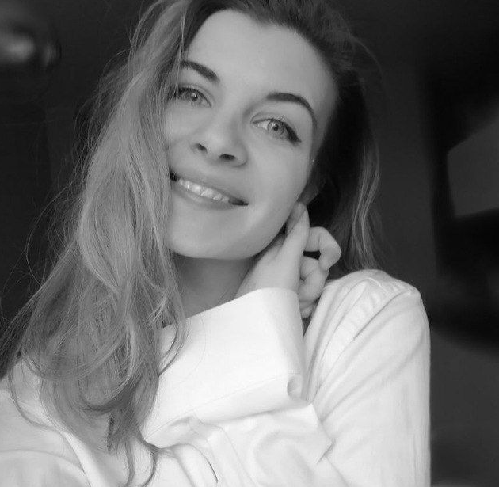

Анастасия Козел

Ссылки на соцсети
Хобби и интересы
Изучаю цифровую живопись в стиле масло и арт-ретуши. Вдохновляет и умиротворяет природа, тишина. Люблю деревенские мотивы, новые места, предметы и здания с историей. Привлекает живость, яркость, современность.
Путь к web-разработке
Работала с админками сайтов, их наполнением. Нравятся технические моменты, такие как что-то настраивать, крутить, искать решение и видеть красивый результат.
Книги